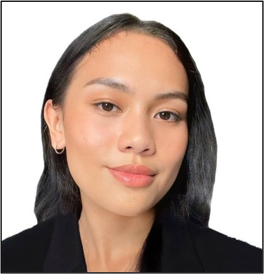
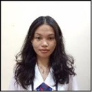
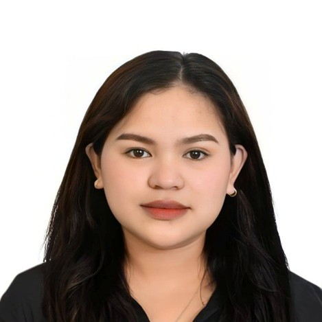
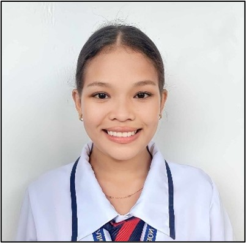

Meet our inspiring journey as future educators dedicated to Special Needs Education.
Four unique stories, one shared passion: making a difference in the lives of children with special needs.

Mandela Joyce

Charlaine Mae

Joyce

Shovie Jane
Bachelor of Special Needs Education
📧 monenday21@gmail.com | 📱 09158662838
📍 Zone 3 Pinamopoan, Capoocan, Leyte
My journey began when I applied to Leyte Normal University. Initially, I was torn between Hospitality Management and Bachelor of Special Needs Education. Though pressure led me to choose hospitality first, my mother's guidance ultimately directed me toward education—a decision that would shape my entire future.
Starting college was both exciting and scary. Everything was new, and I had to learn how to balance academics, extracurricular activities, and personal life. The higher academic standards and independence challenged me, but I learned that staying organized, asking for help, and maintaining a positive attitude makes all the difference.
Throughout my years, I progressively improved. By second year, I joined school clubs and took on leadership positions. Third year brought research challenges and pre-internships where I applied classroom knowledge to real-world situations. These experiences helped me discover my true calling.
Looking back on my fourth year, I recognize how far I've come—from a shy freshman to a confident, capable, and motivated student. I learned that success isn't about avoiding problems; it's about dealing with them with dedication and getting stronger with each challenge. Now, I love learning how to teach children with special needs.
Bachelor of Special Needs Education
📧 charlainem.ornopia@gmail.com | 📱 09606645596
📍 Sitio San Agustin, Poblacion, Kananga, Leyte
When I entered my first year of college, I had no idea what to expect. I was excited but also nervous because it would be my first time being away from my family. I applied only to Leyte Normal University. I asked my mother what program I should take, and she told me Bachelor of Physical Education as first choice and Bachelor of Special Needs Education as second. Unfortunately, I got so excited that I clicked the wrong box—instead of BPEd, it was BTLEd. I only realized it when the BTLEd interviewer emailed me. I qualified for both programs, but my mother told me to choose BSNEd. I was disappointed, but maybe that mistake was a redirection.
When classes started online, I wasn't confident—everything was new. In my hometown, internet connection was unstable, and I faced a language barrier as a Bisaya speaker. Thank God for my mother—she became my translator, helping me communicate with classmates and translating Waray words. My confidence almost hit rock bottom, and there were times I wanted to give up, but my parents kept motivating me.
During Sportsfest, I joined the cheerdance competition and met my classmates who became close friends. Even though we didn't win, I was happy I made friends on my own. In second year, I joined the LNU Dance Company—a dream come true. Balancing academics and dancing was hard as classroom president and SpEL Organization representative. I would go to school at 8 AM and return between 8-9 PM, exhausted but loving every moment. Meeting Ate Louie, who welcomed me warmly, showed me that joining the dance group made me stronger.
Third year was hell—I can't remember half of it because I was just clutching every semester trying to pass. We visited Caibaan Elementary School, and seeing the learners' happy faces motivated me to become an elementary teacher. In second semester, I was assigned to the hearing-impaired class for Field Study. The first day almost made me tear up, remembering my deceased deaf cousin who loved teaching despite her disabilities. I told myself I would continue her dream.
Fourth year is kinda chill—mostly minor courses. We defended our research paper, and I'm thankful for my partner who didn't give up on me. My growth is really visible—from not being able to do things without my mother to doing everything on my own. The shy first-year student became confident by fourth year. College taught me to tough it out and never let doubts control my emotions. My college journey taught me that success isn't about being perfect—it's about standing up every time you fall. Thank you, mama and papa! Mo bawi ra ko sa inyo puhon!
Bachelor of Special Needs Education
📧 sabugarjoyce@gmail.com | 📱 09355175107
📍 Brgy. 103 Palanog, Tacloban City, Leyte
I once saw my future clearly: crisp suits, balanced ledgers, and the proud designation of Certified Public Accountant. That was the dream—a promise of stability and achievement. But life is full of surprises, and mine was a seismic shift I could never have imagined.
The first major challenge arrived with the pandemic. My studies hung in the balance as my parents struggled financially. It was a crippling choice: pursue my personal dream or alleviate my family's burden. I prayed constantly, surrendering the outcome: "If this path is not meant for me, Lord, I will accept it without worry." When I finally stepped away from the CPA track, I realized there was no deep, agonizing pain. It was a quiet affirmation that this chapter was closed.
To cope with the sudden change, I dove into work, hoping to outrun the weight of my decision. It was there, amidst the mundane rhythm of a job, that life delivered my most profound surprise: motherhood. Everything changed.
In 2022, I found myself drawn back to the university, this time as a Future Educator. Teaching was never my primary passion, and I enrolled without a firm goal, but I now believe my child was the silent reason, the magnetic north that pointed me toward the education program.
I was enrolled in the Special Education (SPED) program, a field completely unknown to me. Fear immediately set in. I was a mature student, four years older than my peers, and the sight of my former batchmates graduating felt like a stark spotlight on my own pause. I often whispered: "Napag-iwanan" (Left behind). Hesitation battled determination, yet I continued. My life became a relentless balancing act—a demanding daily performance as a mom, wife, and student all at once.
Looking back, the fear and shame have dissipated, replaced by a quiet sense of triumph. I may not yet possess my professional diploma, but I have already achieved a more meaningful success. I have my family, my constant reminder that I have succeeded in the most important roles of my life. My journey was a detour, but it led me not to a career of calculating wealth, but to a purpose of nurturing potential. I am now Joyce, the resilient mother, devoted wife, and aspiring SPED teacher, ready to embrace the unexpected purpose life chose for me.
Bachelor of Special Needs Education
📧 shoviejane.fernandez17@gmail.com | 📱 09950039383
📍 Channel Ridge View, Babatngon, Leyte
When I walked into college as a first-year student, everything felt uncertain. I was supposed to take Bachelor of Elementary Education—that was the plan, the direction I thought my life was set on. But somehow, life redirected me to Bachelor of Special Needs Education. At first, it felt like a wrong turn, like I had stepped into a world I wasn't ready for. I was confused, scared, and honestly questioning if I belonged there.
But God has a way of placing the right people in our lives at the right time. I met friends who slowly filled the empty spaces and eased the heavy questions in my heart. They made every hesitant step feel lighter. Because of them, my first year—though not the one I planned—became a year I learned to accept change and trust the path given to me.
Moving into second year, more people came into my life—friends who brought warmth, comfort, and laughter. They stood beside me through requirements, breakdowns, and long nights. Every time I doubted myself, they reminded me I wasn't alone. I passed second year because of hard work, yes, but also because of the people who lifted me up when I couldn't lift myself.
Beyond my friends, there was a constant source of strength: my family. They were my safe place—the ones who believed in me even when I couldn't see my own progress. Every time I felt tired, they told me to rest but never to give up. My mom's words, my siblings' jokes, the simple "Kaya mo 'yan"—those things kept me moving through days when quitting seemed easier. My family didn't just support my education; they supported me. Their sacrifices and love built the foundation that carried me through every semester.
Then came third year—the year that tested everything: my strength, determination, patience, and even my self-worth. The major subjects felt like mountains, each one demanding more than I felt I had. There were days I cried in silence, days filled with pressure, and nights where I wondered if I was still strong enough to continue. But I kept going. My friends pushed me forward. My family held me steady. I learned I am capable of surviving storms I once thought would drown me.
Now here I am, standing in my fourth year. Still learning. Still growing. Still dreaming. Some nights, I look back and can't help but feel emotional. From the unexpected beginning, to the friendships that changed me, to the challenges that strengthened me, and the unwavering love of my family—all of these made me who I am now. Today, I'm holding onto my biggest hope: I will graduate in 2026. I am claiming it, praying for it, and working for it—not just for myself, but for everyone who carried me through the hardest parts of this journey. This story—my story—is not perfect, but it is beautiful. It is a story of faith, courage, struggle, and love. And one day, when I finally wear that graduation gown, I know I will look back and say with full pride and gratitude: "I made it—and I didn't make it alone."